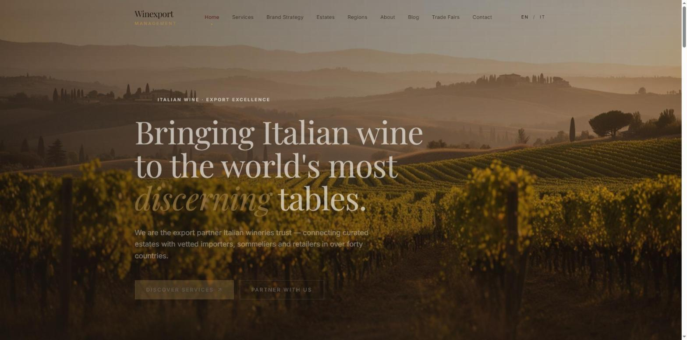
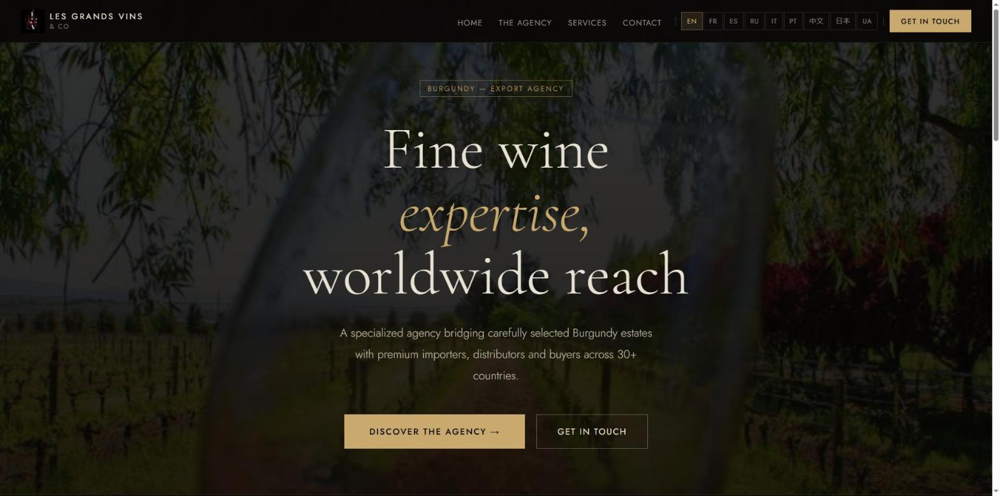
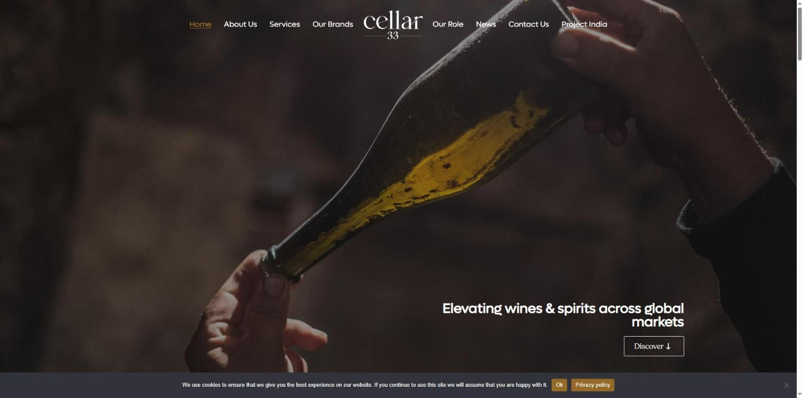
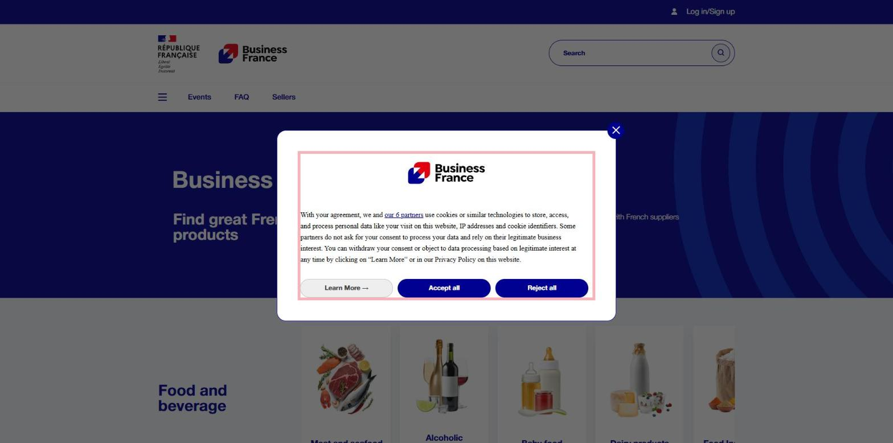
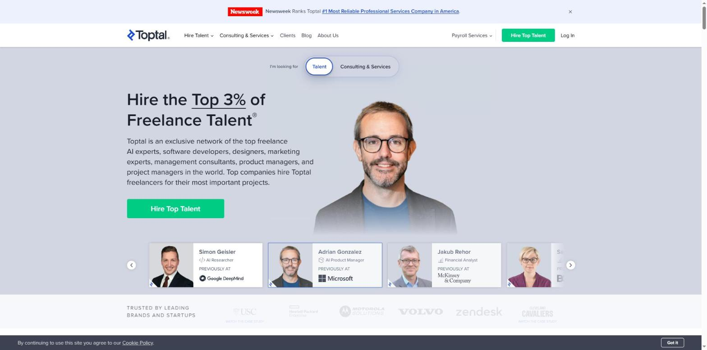

VH Selection — Дослідження
Зведення кроків 03–06 дослідження конкурентів і патернів. Повний текст з усіма посиланнями — research.md.
Усе нижче зібрано з публічних сторінок і
публічних скріншотів. Тека research/screens/own/
(скріни власного акаунта) перевірялась чотири рази — востаннє
прямо перед цим оновленням сторінки — і щоразу була відсутня, тому
жодного матеріалу з власного акаунта тут немає.
Матрицю перебудовано після того, як клієнт назвав п'ять нових прямих конкурентів (29.10.2026): прибрано Robinson & Sinclair і Faire, додано Winexport Management і Les Grands Vins & Co, Cellar 33 залишено як контраст усередині того самого прямого ринку.
Конкуренти
Матриця — 5 компаній: ХАРД — Winexport Management, Les Grands Vins & Co, Cellar 33; СОФТ — Business France Marketplace; АСПІРАЦІЙНІ — Toptal. Повний перелік усіх 9 ХАРД-конкурентів — notes/03-competitors.md.
| Вісь | Winexport Management | Les Grands Vins & Co | Cellar 33 | Business France Marketplace | Toptal |
|---|---|---|---|---|---|
| Перший екран | Фото тосканських виноградників, "Bringing Italian wine to the world's most discerning tables", "We are the export partner Italian wineries trust — connecting curated estates with vetted importers... in over forty countries" (WebFetch winexport-management.com) | Фото виноградника у сутінках, "Fine wine expertise, worldwide reach", "carefully selected Burgundy estates with premium importers... across 30+ countries" (WebFetch lesgrandsvins.co) | Фото пляшки шампанського, "Elevating wines & spirits across global markets" (WebFetch cellar-33.com) | Держбанер (прапор Франції), "Find great French-made products"; кукі-банер перекриває частину екрана (WebFetch marketplace.businessfrance.fr) | Перемикач "Talent / Consulting & Services", "Hire the Top 3% of Freelance Talent" (WebFetch toptal.com) |
| Ключова задача з брифу | "For Italian wineries" з CTA "Start the conversation"; 18 господарств з лінком "See all 37 estates" (WebFetch winexport-management.com) | Форма контакту одразу запитує роль відвідувача (Producer/Winery, Importer/Distributor, Other) перед повідомленням (WebFetch lesgrandsvins.co) | "Your trusted export agency" звертається до обох аудиторій в одному абзаці; три блоки послуг ведуть на Services (WebFetch cellar-33.com) | Пошук/категорії → підкатегорії → лістинги продавців → сторінки продавця (WebFetch marketplace.businessfrance.fr) | "Hire Top Talent" → обговорення з експертом → підібрані кандидати за дні → оплата лише за умови задоволення (WebFetch toptal.com) |
| Перевірені | Так, явно й конкретно — "A proprietary protocol pairs each estate with vetted importers... Our partners are chosen, not collected"; 37 іменованих господарств у 8 регіонах (WebFetch winexport-management.com) | Частково — "carefully selected", "with the utmost care", без названого процесу чи порогів (WebFetch lesgrandsvins.co) | Частково — "trusted"/"curated", без критеріїв чи цифр (WebFetch cellar-33.com) | Так, прямо — "Thousands of vetted suppliers" (WebFetch marketplace.businessfrance.fr) | Так, дуже явно — "Top 3%", "rigorously tested and vetted", 98% trial-to-hire (WebFetch toptal.com) |
| Завершення задачі | "Partner With Us" → сторінка Contact (email, телефон, три офіси), без логін-муру (WebFetch winexport-management.com) | Форма на сторінці Contact (ім'я, email, роль, повідомлення), без логін-муру (WebFetch lesgrandsvins.co) | "Get in Touch" → Contact Us, без логін-муру (WebFetch cellar-33.com) | Доступ обмежений — що саме на сторінці продавця, з головної не видно (WebFetch marketplace.businessfrance.fr) | Доступ обмежений — "/hire", чи потрібен акаунт не видно (WebFetch toptal.com) |
| Мова інтерфейсу | Англійська й італійська (EN/IT) (WebFetch winexport-management.com) | 9 мов: EN, FR, ES, RU, IT, PT, 中文, 日本, UA (WebFetch lesgrandsvins.co) | Англійська (WebFetch cellar-33.com) | Англійська (en_US) (WebFetch marketplace.businessfrance.fr) | Англійська, без перемикача (WebFetch toptal.com) |
Три спільні патерни ринку
- Жоден сайт не ховає базову навігацію чи опис компанії за логіном — вхід потрібен лише на етапі транзакції.
- Перший екран одразу називає роль сайту одним реченням у заголовку, без проміжної сторінки "про нас".
- Переглянуто: конкретна мова верифікації — вже не межа між "прямий ринок" і "інші категорії". Winexport Management (ХАРД) має найконкретнішу мову відбору з усіх п'яти; Cellar 33 і Les Grands Vins & Co (теж ХАРД) лишаються на рівні якісних слів. Слабкість — вибір конкретної компанії, а не ніші.
Три відмінності
- Конкретність доказу довіри всередині одного ринку: Winexport Management — іменований протокол і точне число (37), Cellar 33 і Les Grands Vins & Co — лише якісні прикметники.
- Структура лідогенерації: Les Grands Vins & Co запитує роль відвідувача прямо у формі; Winexport Management і Cellar 33 — загальна сторінка Contact без сегментації.
- Багатомовність: Les Grands Vins & Co — 9 мов, Winexport Management — 2, решта — фактично лише англійська.
Скріни головних екранів





Бенчмарк
Вимір: «Перевірені» — найслабший вимір ринку щодо головного для аудиторії з брифу. Переважна більшість прямих конкурентів не показує на першому екрані конкретного доказу відбору. Виняток: Winexport Management — прямий конкурент, що вже робить це добре ("proprietary protocol", "chosen, not collected", 37 господарств) — доводить, що слабкість вирішувана в межах самої ніші, а не її структурне обмеження.
Топ-3 механізми для MVP
- Публічний чекліст критеріїв відбору виноробні (іменовані, кількісні пороги). Закриває головну слабкість — і перевершує Winexport Management, у якого сам протокол навмисно "proprietary" (прихований). Зразок — Airbnb Superhost (airbnb.com/help/article/829).
- Атрибутовані цитати/міні-кейси від реальних імпортерів-партнерів з ім'ям і компанією. Незалежний, самоперевірний доказ без потреби у великому обсязі відгуків. Зразок — Clutch.co (help.clutch.co/knowledge/get-verified).
- Числовий блок "воронка відбору" біля хіро (напр. «З N заявок приймаємо X%»). Подавати впевненим тоном, як у Winexport Management, але з розкритими цифрами, яких у нього немає. Зразок — Toptal (toptal.com/top-3-percent).
Що не спрацює
Безперервно перераховуваний алгоритмічний рейтинг довіри (Upwork Job Success Score, G2 Momentum/Grid) — вимагає обсягу транзакційних даних, якого в малої консалтингової компанії на старті немає; тонка імітація виглядатиме або непереконливо, або оманливо "живою".
Патерни
Обраний патерн: кураторський консьєрж — агент особисто знайомиться з постачальником і покупцем, вручну добирає пари, супроводжує угоду.
Чому саме він
- CLAUDE.md описує VH Selection як діючу особу ("міжнародний експортний партнер", "джерело перевірених виробників") — людська роль куратора вже є бізнес-моделлю.
- Аудиторія виноробень явно "не має власного міжнародного sales-відділу" — не потягне самообслуговування чи проактивну подачу заявок.
- Відповідність вина й ринку — якісне, репутаційне рішення, а не те, що зводиться до полів фільтра чи балів алгоритму.
Другий патерн за умови зростання портфоліо — самообслуговуваний каталог з фільтрами. Категорично не підходить — алгоритмічний метчинг за заданими критеріями. Деталі — notes/06-patterns.md.
Підтверджено новими даними: Winexport Management працює за тим самим патерном 2 і впевнено заявляє про відбір ("chosen, not collected"), підтверджуючи життєздатність патерну в ніші — але лишається слабким на розкритті самих критеріїв відбору.
Висновки
Прогалина: більшість прямих конкурентів не показують доказу відбору — але Winexport Management уже довів, що це можливо в нашій же ніші, тож просте "бути першим" уже не аргумент. Гіпотеза: чекліст із розкритими, перевірними критеріями перевершить найсильнішого конкурента, у якого сам протокол навмисно прихований.
Прогалина: невідомо, чи має VH Selection вже готові конкретні цифри довіри. Гіпотеза: якщо цифри є — у хіро поряд із чеклистом, тоном не менш впевненим за Winexport Management, але з розкритою методологією; якщо немає — на старті опертися на атрибутовані цитати імпортерів.
Прогалина: невідомо, в якій точці флоу ставити "вхід" у воронку — загальний CTA (Winexport Management, Cellar 33) чи сегментація ролі у формі (Les Grands Vins & Co). Гіпотеза: сегментація ролі одразу у формі краще відповідає консьєрж-патерну, але варто перевірити, чи не додає тертя аудиторії без власного sales-досвіду.
Прогалина: немає обсягу даних для "живого" показника довіри. Гіпотеза: свідомо уникати на MVP алгоритмічних механізмів і покладатись на статичні, але конкретні докази.
Прогалина: незрозуміло, коли каталог портфоліо стане виправданим. Гіпотеза: додавати лише після накопичення достатньої кількості кейсів (орієнтовно — десятки партнерів).
Прогалина: скільки мов інтерфейсу реалістично підтримувати на MVP — розкид серед прямих конкурентів від 2 (Winexport Management) до 9 (Les Grands Vins & Co). Гіпотеза: почати з англійської і розширювати мови лише під конкретний ринок виходу, а не одразу копіювати максимум конкурента.